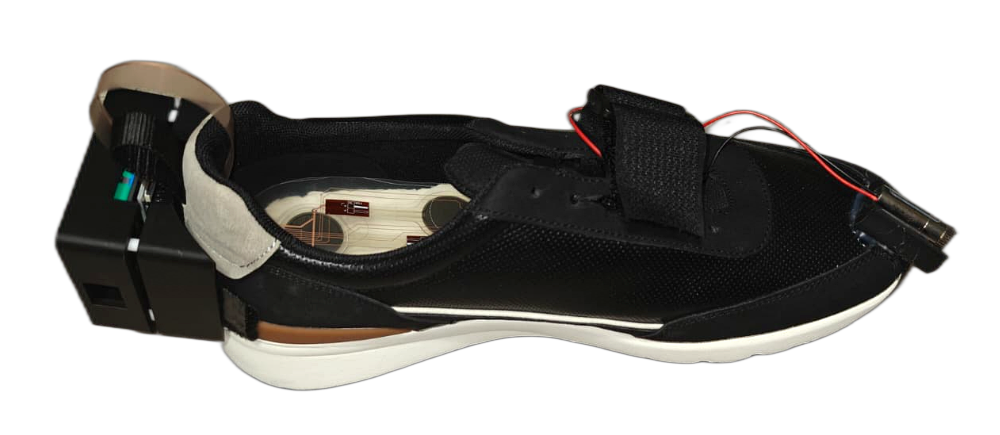
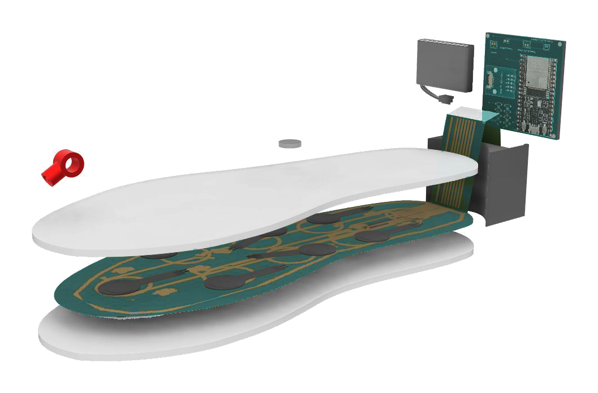

Visual step cue
A projected target indicates the next step location to help interrupt freezing of gait.

GaitSense
Smart insole + AI gait analysis for objective Parkinson’s diagnosis support and longitudinal monitoring.
Clinical need
Parkinson’s diagnosis often depends on medical history and visual gait assessment. That subjectivity drives misdiagnosis risk and makes progression hard to track between visits.
Platform
Switch tabs to explore hardware, software, clinical use, and patient guidance.
Multiple force-sensitive resistors map vertical ground reaction force across the gait cycle.
Thin circuit architecture for comfort — designed to sit inside everyday footwear.
Compact electronics for sensing, power, wireless transmission, and cueing connections.
Motion-activated sampling and burst transmission to support multi-day operation on a compact battery.

Converts pressure streams into clinically meaningful features: center-of-pressure paths, double-support timing, stride regularity, and force symmetry.
First distinguishes control vs Parkinson’s, then stages severity using the Hoehn & Yahr scale.
Final model combines CoP trajectory derivatives and double-support percentage for 90% end-to-end accuracy.
Store and compare gait biomarkers over time to support treatment adjustment and progression monitoring.
Short supervised walks under clinical observation produce quantitative biomarkers clinicians can review.
Wear outside the clinic to capture intermittent abnormalities missed by brief office exams.
Designed to reduce subjectivity and expand access where specialist interpretation is limited.
Objective before/after gait comparisons help evaluate medication and rehab impact.
A projected target indicates the next step location to help interrupt freezing of gait.
A gentle underfoot vibration cues initiation of the next step during hesitation.
Device map
Interactive hotspots on the assembled prototype — laser cue, pressure insole, and control module.
Toe-mounted emitter projects a target for the next step to help interrupt freezing.
Workflow
Click each stage to see what happens under the hood.
Patient walks with GaitSense. Dual insoles stream pressure sensor readings wirelessly to a local device for processing.
Biomarkers
Select a biomarker to see why it matters clinically.
CoP trajectories differ between control, early PD (HY 2.0–2.5), and mid PD (HY 3.0). Spatial CoP statistics were among the strongest differentiators in model feature importance.
Demo
Capture → analysis → insight, in one walkthrough.
Evidence
Validation emphasized high sensitivity — reducing the chance of missing Parkinsonian gait patterns.
Advisors consulted include clinicians and engineers affiliated with OHSU Balance Disorders Lab and neurology practice. Prototype refinements (mounting, double-support metric, cueing) followed that feedback.
FAQ
Next step
Open to clinical pilots, advisor feedback, and research partnership.
Created by Nitya Shah & Nimay Shah